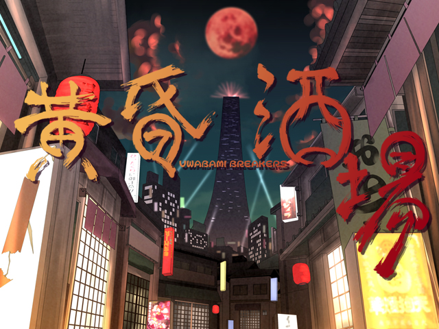

黄昏酒場〜Uwabami Breakers〜

『新時代の弾幕は、避けるのではなく酒る』
動作環境
必須環境
OS
Windows 2000/XP
※DirectX 9.0c (Nov 2007) 以降必須
CPU
Pentium III以降（もしくは互換）のCPU （推奨 800MHz以上）
VGA
DirectX9.0cに対応した高速なビデオカード(推奨 VRAM 32M以上)
推奨環境
Sound
Direct Sound対応のサウンドカード
Other
6ボタン以上のゲームパッド
■インストール・アンインストール方法
CD内のインストーラーを起動してください。
アンインストールの場合は、スタートメニューからアンインストールを選ぶか、
コントロールパネルのアプリケーションの追加と削除からアンインストールを行って下さい。
■ゲームの遊び方
インストーラーが登録したショートカットを選択、もしくはalcostg.exeをダブルクリックするとゲームが起動します。
起動時に確認項目がありますので、希望のプレイ環境に合わせて適切なものを選択してください。
●ウィンドウモードを選択してください
ゲームをフルスクリーンで遊びたい場合は「フルスクリーン」を、
ウィンドウで遊びたい場合は「ウィンドウ」を選択してください。
選択するとゲームが起動します。
●起動時に毎回聞く
このチェックボックスが選択されていると、常に画面設定の確認がでます。
毎回の確認を省略したい場合は、チェックボックスを外してください。
(c) 2007 呑んべぇ会 All Rights Reserved.